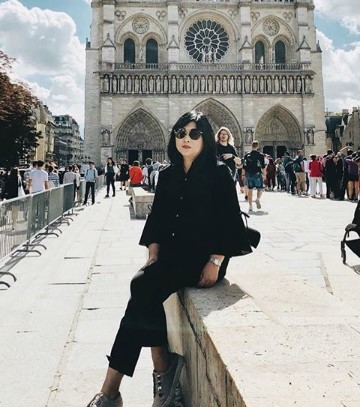

|  |
Luana Marpanda
Pada usia 16, Luana menerima beasiswa dari Pemerintah Singapura untuk belajar Pertunjukan Musik di Nanyang Academy of Fine Arts (NAFA), Singapura. Pada tahun 2013, ia memperoleh Diploma di bidang Music Performance (2013). Isyana dianugerahi beasiswa penuh untuk belajar lebih jauh di NAFA bekerjasama dengan The Royal College of Music (RCM) London, di bawah Bachelor of Music dengan Honours Funded Degree Programme. Pada tahun terakhir studinya, ia menerima Beasiswa RCM Excellence Award. Di bawah pengawasan dan bimbingan guru profesional, di antaranya: Dr. An Hsing Chen Jessica (2013-2014), Lim Yau (2013-2014), Lim Shieh Yih (2012), Joyce Khoo (2010-2012), Avip Priatna ( 2009-2010), Luana Marpanda (yang mengajarinya Electone) dan Paul H. Yoedianto (1998-2008), |